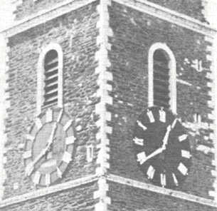

 'The Four-Faced Liar' The clock on the St Anne's Church was one of the first public clocks in Cork City. The idea for the clock was proposed by Councillor Delay at a meeting of Cork Corporation in 1843. He spoke of the hardship imposed on many working class people who were unable to tell the time, as many of them did not own watches or clocks. He was supported by some of the medical profession in the city as they argued that many poor people were in danger of poisoning themselves by not knowing the times when prescribed medicines should be taken. At a meeting of Cork Corporation on the 23rd May 1843 it was agreed that a grant of £250.00 be provided for the design and construction of a clock. James Mangan, a Cork architect and clockmaker won the public competition to design the clock. He was assisted in the work by his son Richard. Cork Corporation determined that the clock should stay in public ownership rather than being the property of the Church of Ireland. To this end they appointed 4 men, at an annual cost of £13.00 to maintain the clock. A local craftsman, Daniel Thresher, built the clock at a cost of £18.00 Thresher was also responsible for replacing one of the bells in the church in 1869. In 1847, at the height of the Irish Famine, the clock was installed in the church.
Within the tower are housed the famous Bells of Shandon. The church was already thirty years old when the bells were installed. Cast by Abel Rudhall of Glouster in 1750 they were placed in position in the tower in 1752. One of the bells bears the inscription "We were all cast at Gloustcester in England. Abel Rdhall, 1750". The bells were a gift presented by Daniel Thresher and weighted over 6 tons. Although four of the bells have been recast over time, one in 1869 and the others in 1908, they all retain their original inscriptions. The bells first rang out over the city on December 7th 1752 for the marriage of Henry Harding and Catherine Dorman. They were re-casted in 1865 and in 1906 they were hung in a fixed position so as to reduce vibration. It was said that when the bells were rung in a swinging position the patients in the local hospital, the North Infirmary Charitable Hospital shook in their beds. The original inscriptions on each bells reads: When us you ring we'll sweetly sing God preserve the Church and King Health and prosperity to all our benefactors Peace and good neighbourhood Prosperity to the city and trade thereof We were all cast at Gloucester in England by Abel Rudhall 1750 Since generosity has opened our mouths our tongues shall sing aloud its praise to the Church the living call and to the grave do summon all The last bell, the tenor, weighs 26cwt. and also bears the name Daniel Thresher, a great benefactor of the Church, who, in his will, left money to provide this bell. It was the same Daniel Thresher who provided the Church of St Anne with a single bell before the peal was introduced. This bell, dated 1745, now hangs in the Church of St. Mary in Sundays Well. Our world famous bells can be rung on the first floor.
| |BACK - St Anne's Shandon: | NEXT - Blarney Castle: | |